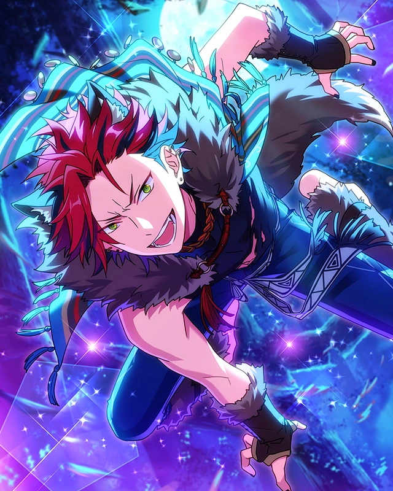
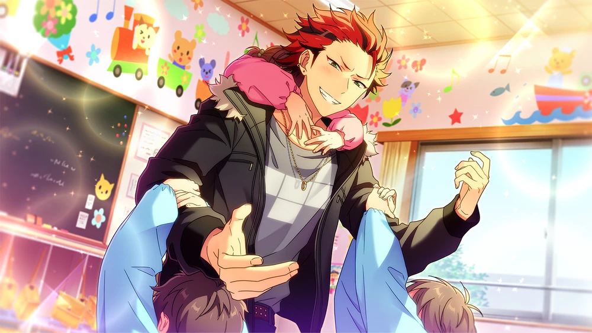
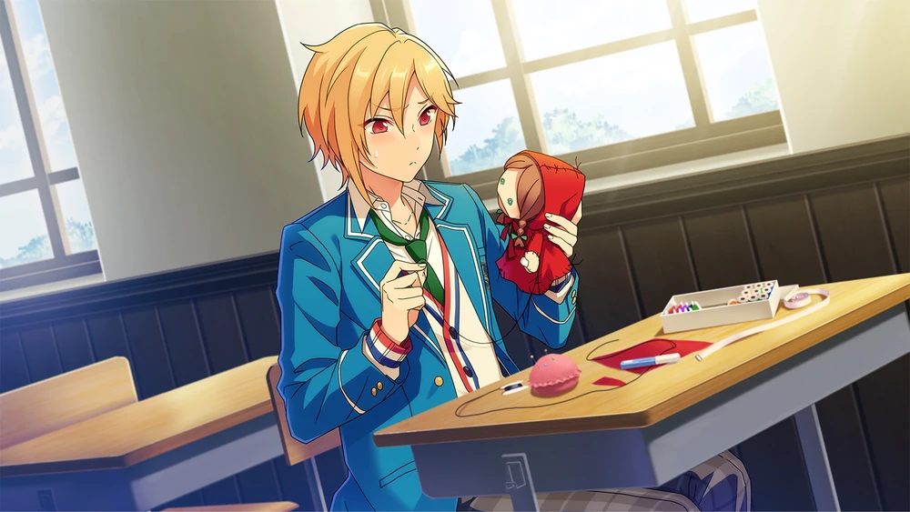

The Wolf and Red Riding Hood



Unproofread Translations Terms of Service: This story is not JP proofread. Unproofread translations are under much stricter terms of service, including no screenshots publicly spread. Click for more information
While these translations are as accurate as I can personally make them, I am not comfortable with and do not permit use of the following:
Do not take or publicly circulate screenshots of this translation.
Do not use this translation in analysis threads, story threads, fanworks, quotebots, etc.
I would love to get this story properly proofread one day! If you are a translator interested in JP proofreading this story, feel free to email me or DM me at @citrinesea on Twitter.
Chapter 1

Everyone~! Good mo~rning...☆
...
Hm? Well look who's early as always. What's with that face, Kanzaki, it's like you've seen a ghost or somethin'.
F-Forgive me. It was just such a peculiar greeting to receive running into you that I couldn't help but wonder if it were truly the real Kiryu-dono in front of my very eyes?
I'd be real shocked if I had a look-alike out there, that's for sure.
Sorry. I got a request to be on a TV show is all, so I was just practicin' for the role.
Oh my, what a joyous occasion! It is not often I watch "tere-bision", but... if Kiryu-dono is making an appearance, that is an entirely different story.
I shall need to learn how to record it. When it comes to machines, Yuuki-dono would be the perfect teacher.
Hmmm. You're gettin' along with your classmates real well, huh? What do you guys usually talk about?
Nothing out of the ordinary, really. Yuuki-dono is quite knowledgeable about technology, so he has shown me to use devices such as "lap-tops".
Recently, he's been showing me ways to use my "su-maato-fone"
I have been showing him the ways of martial arts as well, so in a way, it feels strangely like some kind of cultural exchange ♪
That so? The work I got this time feels like its own kinda cultural exchange... I can't seem to get the hang of it, so I'm a lil' worried.
Hmm... You are worrying over work, Kiryu-dono? I would be honored to lend you an ear, should I be suitable for you
You have looked after me time and time again, after all... This comes nowhere close to repaying all of that, but even so, I would like to be of some use.
It's not that big a worry, I just feel unfit for the request they made, is all...
They musta made the request after watching my appearance in that one drama, but that's on me for accepting the offer without lookin' at the details all careful.
Ah, let's see... Was it the drama where you played the role of the teacher?[^]
The way you could silence the chattering students with a single glare was strikingly memorable, Kiryu-dono.
Wait, I wasn't tryin' to glare though. Well, damn, guess that's the impression the viewers got, huh?
But that role was supposed to be quiet and stern, so it wasn't all that different from how I am normally... Even the director complimented me and said I was perfect for the role.
But I'm absolutely stumped how someone watched that, and thought "hey, this guy’d be perfect as an older brother on a kids' show".
The director for that show said, "Yeah, guy seems like he’d be good with kids," but ... If anything, I scare the hell out of 'em so bad they hate me.
I don't think that's the case. Many people love and respect you, Kiryu-dono.
Haha, thanks. Still, this time, my costars are all lil' kids, so... The moment they look at me, they're gonna start cryin'.
It'd be hard to keep a production going smoothly if that happens. Worst comes to worst, I ruin the whole entire show.
What am I gonna do? I wonder if it's better if I just drop out of the role... But pullin’ out after I said I’d do it would make me look real bad.
Besides, it's not like I don't wanna try it for myself.
If that is the case, I think... you should stay and commit to the role...
Many people fear me as well, so I know that feeling all too well, Kiryu-dono.
Well, adults tend to be more scared of me than children... Or rather, it’s people my age who tend to be scared of me.
It's your katana that's the problem. If you didn't have that on ya, I doubt you'd seem as scary to 'em.
Nay, this blade is like my soul. I have special permission from the government to carry it on my person as well.
Let's put that aside... I do have a younger brother. I could ask him what kind of person he feels would be approachable. Perhaps that may serve as a useful reference.
Ahh, yeah, that'd be great. I was tryin’ to imitate one of those older brothers on the TV shows.
That’s what that greeting was a second ago... And it ended up freaking you out, huh.
So that is the reason you did that. I am deeply sorry for giving you such a disrespectful reaction!
Nah, anyone who knows me woulda seen that and had the same reaction, right?
I mean, even I was thinkin’, "What the hell am I even doin'?" while I was sayin’ it.
It's not a drama, so it’s not like I gotta get fully absorbed in the character, but... to be honest, I just can’t get a feel for this kinda tone.
Chapter 2
...
Yo. Mornin' there, Nito. You look real zoned in. You workin' on a Broadcast Committee script?
Eyah!? K--K--Kuwochun!?
Name's not "Kuwochun," y’know.
Anyways, I spooked you too, huh?
... Hm? Looks like you're sewin' somethin'. Ain’t that unusual? Have ya opened yer eyes to the beauty of sewin' too?
Ah, no, that’s not it... I need to sew something for something related to the Broadcasting Committee.
Hm, don’t gotta a clue what that's supposed to mean. Wonder what kinda broadcastin' work needs sewing' for it. Sewin's more in the Handicrafts Club domain.
Sorry, I didn't explain it well enough~ Mnn, so, by "related to the Broadcasting Committee," I mean that we have to go do a puppet show for the neighborhood elementary school.
Right now, I'm making a handpuppet for it~
Ahh, so that's what it is. But why a puppet show? I'd’ve thought that the broadcasting committee would agree to do something more like reading a storybook out loud or something.
Yeah, I thought that would’ve suit us better too, but… we’ve got a member with social anxiety in the broadcasting club.
Reading a picture book in front of children requires a certain degree of self-confidence. That being the case, holding a puppet show makes it kinda easier to talk with them.
But puppetry’s pretty hard, huh~
I borrowed a book from the library and got all the materials I needed, but as soon as I actually started to make one, I messed up right away.
The threads are coming loose, and when I try to restitch them, they just come apart again.
I can't really set aside the time to practice something like this~ I was thinking I'd rather just commission someone to make them but...
Even when I suggest that out loud, I don't want to leave this to other people.
Come to think of it, you've talked about the Broadcasting Committee widening its range of activities. Being proactive is good, but don't push yourself so hard you burn out.
Ahaha, I appreciate you worrying about me~ Just talking to you refreshed me, Kuro-chin. Al~right! Time to do my best for the sake of those children's smiles.
Hey, Nito. I might be pokin' my nose where it doesn't belong here but you guys have to practice for the puppet show too, right? So how about I make the puppets for ya?
Sewin's my specialty, so just say the word on how many puppets you want, and I could make 'em all.
But I'd feel sorry if I had to rely on you that much Kuro-chin.... If it's not too much trouble, could you just show me how to sew instead?
I don't mind. It's not like I hate teaching people how to do stuff. Wanna get a start on it right away after school?
Awesome! I'm looking forward to working with you, Kuro-chin~♪
With that decided, I'll let Shinobun and Makochin know.
While you and I are making the puppets, they can just practice the puppet show.
Oh yeah, what are the main characters of the puppet show supposed to be, anyways? I can’t really make ‘em if I don’t know the characters.
Right. We're doing "Little Red Riding Hood." That was the storybook reading we were going to do at first, so that's what we're doing for the puppet show.
So that means we gotta make four puppets-- Lil' Red, Gramma, the wolf and the hunter.
I can fix up the Lil' Red you made, so can you take care of makin' the wolf for me?
Oh yeah! The one I made is still a little deformed, so please fix her up ♪
Got it. She's the main character, so she's definitely gotta stick out like a leadin’ lady.
Still, when it comes to ways to make her... I'm not too good at makin' things look cute, so... If you could gimme advice on how to do that, it'd be a big help.
Ah, then you can definitely count on me!
Cuteness is the whole selling point of Ra*bits, after all~ We're well attuned to stuff like cute moves and accessories ♪
Well then, why dontcha fill me in on that stuff? It'd go by quicker if I heard it from the person playing Lil' Red too.
Hm? I'm not playing Little Red Riding Hood?
Really? I figured you'd be perfect for the role, though.
Well, who's going to play Lil' Red, then? And what role were you gonna do anyways?
That's... oop, we'd better take our seats soon before Kunugi-senpai marks us tardy, Kuro-chin.
Is it time already? I thought I got to school pretty early... Time flies way too fast when you're chattin’ it up.
Welp, see ya then, Nito.
Chapter 3
Are you here, Shinobun~?
Ah, Chairman-dono! And Kiryu-dono too! Good afternoon~♪
Mhmhm. It's great you're able to greeting us so properly
I let you know that Kuro-chin was coming ahead of time, but let me explain again.
Kuro-chin's going to help make puppets for our puppet show.
And while he teaches me puppets, you're going to practice on your own.
Well, it's fine if you even just do a read-through of the script.
I was thinking that playing both the hunter and the grandmother might be a challenge, but... I can help you with it too.
Hey, Nito. You never ended up tellin' me the role you were gonna play.
If it's not Lil' Red, isn't the wolf the only role that’s left?
Mhm. I'm gonna do the wolf! Roar!
That wasn't scary at all. If anythin' it was endearing.
You can't be the wolf. Isn't Ra*bit's whole selling point about bein' cute? Somethin' like a wolf is the exact opposite of that.
You're right about that, but I want to try doing something different from our usual image every once in a while.
Look, Leo-chin invited us to be part of Knights' Killers[^] right? I wanna do stuff like that~♪
Hey now, don't get some kinda addiction now?
You're the leader of Ra*bits. If you just completely overhaul the image of Ra*bits, are your fans gonna be able to keep up with that?
Ahaha. I said "every once in a while"~ Even I can't be a naughty person all the time. People have things they're good at and things they aren't, after all.
"Cuteness" is Ra*bits main weapon right now, but I want to broaden our horizons with jobs by developing more, different weapons too.
Anyways, I'm gonna play the wolf, and Shinobun is gonna play the hunter and the grandmother. Shinobun, make sure you finish off the wolf during the actual performance, 'kay ♪
Hold on a sec. Then what about Lil' Red? There's no way you can hold the play without the main character.
Actually, Mako-chin was supposed to play Little Red Riding Hood, but...
Well, Trickstar has been chosen to be the representative of Yumenosaki Academy at the SS at the end of the year, and Mako-chin is a part of that.
He's so busy practicing for that, he might have to drop out of the puppet show...
He was going to try to find a way to participate, but I told him it'd be unreasonable and I wanted him to focus on SS instead.
However, I still haven't found a replacement... And if we don't find one, Mako-chin's gonna insist on participating...
Shinobun already has two roles with the wolf and the grandmother, so there's no way I can ask him to do Little Red Riding Hood too.
I could do the wolf and Little Red Riding Hood, but I'd have to puppet both at the same time~ To be honest, that might be too much for me to do alone.
M~nn. Gathering intel is my specialty, but when it comes to finding people like this, I'm worthless.
You're well-connected, aren't you, Chairman-dono? Is there anyone who comes to mind for you that might seem good at a puppet show?
M~nn... I did reach out to a few people I thought might be fit for the job, but it looks like all of them are pretty busy.
We don't have much time until the puppet show, so it's been a real challenge trying to find someone to do it.
Chairman-dono, if that's the case, have you asked Kiryu-dono yet?
Oh, that's right. We've got Kuro-chin here~♪
Hey now, don't just suck me into this like it's a natural part of the conversation.
No good, Kuro-chin? I already feel pretty bad having you help me make the puppets for the puppet show, but...
I'm gonna do my best to make this puppet on my own so I don't have to inconvenience you!
You're a man, so don't bow your head so easily like that. You asked for my help, so my help is what you're gonna get.
But I'm real bad at acting, much less acting out a role like Lil' Red…? I'm not a good fit.
Well, if Little Red Riding Hood certainly isn't a fit~ Why don't you switch roles with Chairman-dono?
Well, I guess that's valid. I'm the one in a pickle here, so I can't afford to be picky...
If you could help us by playing the role of the wolf, Kuro-chin, I'll play as Little Red Riding Hood.